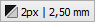
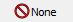
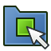
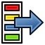
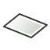
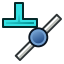
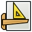

Draft Workbench/es

Introducción
El  Entorno de trabajo Borrador se centra principalmente en la creación y modificación de objetos 2D en FreeCAD. Sin embargo, no se limita al plano XY del sistema de coordenadas global. Sus objetos pueden tener cualquier orientación y posición en el espacio 3D, y algunos objetos Borrador pueden ser planos o no.
Entorno de trabajo Borrador se centra principalmente en la creación y modificación de objetos 2D en FreeCAD. Sin embargo, no se limita al plano XY del sistema de coordenadas global. Sus objetos pueden tener cualquier orientación y posición en el espacio 3D, y algunos objetos Borrador pueden ser planos o no.
Los objetos Borrador se pueden usar para dibujo general, manera similar a como se hace con objetos creador por Inkscape o AutoCAD. Pero también pueden servir de base para la creación de objetos 3D en otros entornos de trabajo. Un Alambre del entorno Borrador puede usarse para definir la trayectoria de un Muro del entorno Arco, un Polígono del entorno Borrador se puede extruir con el comando Extrusión del entorno Pieza, etc. Muchas de las Herramientas de modificación del entorno Borrador también se pueden aplicar a objetos 2D y 3D creados mediante otros entornos de trabajo. Por ejemplo, se puede mover a un Croquis del Croquizador o crear una Matriz Ortogonal del Bocetador a partir de un objeto del Entorno de Trabajo Pieza.
Este entorno también proporciona herramientas para definir un Plano de trabajo, una Rejilla y un Sistema de ajuste para controlar con precisión la posición de la geometría.
Si su objetivo principal es la producción de dibujos 2D complejos y archivos del tipo DXF, y no necesita modelado 3D, FreeCAD podría no ser la opción adecuada. En ese caso, le convendría considerar un programa de software específico para dibujo técnico, como LibreCAD o QCad.
{kind=link}
La imagen muestra la Rejilla alineada con el plano XY.
A la izquierda, en blanco, varios objetos planos.
A la derecha, un Alamabre no plano utilizado como objeto de ruta de una Matriz de trayectoria.
Bocetado
 Line: Crea una línea recta.
Line: Crea una línea recta.
 Polilínea: Crea una polilínea (también llamada cable), es decir, una secuencia de varios segmentos de línea, ya sean rectos o arcos de curva, conectados.
Polilínea: Crea una polilínea (también llamada cable), es decir, una secuencia de varios segmentos de línea, ya sean rectos o arcos de curva, conectados.
 Esquina Redondeada: Crea un empalme, una esquina redondeada o un chaflán, un borde recto, entre dos bordes seleccionados.
Esquina Redondeada: Crea un empalme, una esquina redondeada o un chaflán, un borde recto, entre dos bordes seleccionados.

 Arc Tools:
Arc Tools:
- Arco: Crea un arco circular a partir de un centro, un radio, un ángulo de inicio y un ángulo de apertura.
 Arco desde 3 puntos: Crea un arco circular a partir de tres puntos que definen su circunferencia.
Arco desde 3 puntos: Crea un arco circular a partir de tres puntos que definen su circunferencia.
 Círculo: Crea una circunferencia a partir de un punto, su centro, y un radio.
Círculo: Crea una circunferencia a partir de un punto, su centro, y un radio.
 Ellipse: Crea una elipse a partir de dos puntos que definen los vértices opuestos de un rectángulo en el que encajará la elipse.
Ellipse: Crea una elipse a partir de dos puntos que definen los vértices opuestos de un rectángulo en el que encajará la elipse.
 Rectangle: Crea un rectángulo a partir de dos puntos que serán dos vértices opuestos.
Rectangle: Crea un rectángulo a partir de dos puntos que serán dos vértices opuestos.
 Polygon: Crea un polígono regular a partir de un punto inicial, su centro, y un radio.
Polygon: Crea un polígono regular a partir de un punto inicial, su centro, y un radio.
 B-Spline: Crea una curva B-spline a partir de varios puntos definidos por los clics de las pulsaciones.
B-Spline: Crea una curva B-spline a partir de varios puntos definidos por los clics de las pulsaciones.
 Bézier Tools:
Bézier Tools:
- Curva cúbica de Bézier: Crea una curva de Bézier de tercer grado.
 Curva de Bézier: Crea una curva de Bézier a partir de varios puntos definidos por los clics de ratón mientras se traza su trayectoria.
Curva de Bézier: Crea una curva de Bézier a partir de varios puntos definidos por los clics de ratón mientras se traza su trayectoria.
 Punto: Crea un punto aislado.
Punto: Crea un punto aislado.
 Envoltura mediante Caras: Crea un objeto de superficie a partir de las caras seleccionadas.
Envoltura mediante Caras: Crea un objeto de superficie a partir de las caras seleccionadas.
 Forma desde Texto: Crea una forma compuesta que representa una cadena de texto.
Forma desde Texto: Crea una forma compuesta que representa una cadena de texto.
 Sombreado: Crea sombreados en las caras planas de un objeto seleccionado.
Sombreado: Crea sombreados en las caras planas de un objeto seleccionado.
Anotación
 Texto: Crea un texto de varias líneas en un punto determinado.
Texto: Crea un texto de varias líneas en un punto determinado.
 Cota: Crea una cota lineal, una cota radial o una cota angular.
Cota: Crea una cota lineal, una cota radial o una cota angular.
 Etiqueta: Crea un texto de varias líneas con una línea de referencia de 2 segmentos y una flecha.
Etiqueta: Crea un texto de varias líneas con una línea de referencia de 2 segmentos y una flecha.
 Estilos de anotación: Permite definir estilos que afectan las propiedades visuales de los objetos similares a anotaciones.
Estilos de anotación: Permite definir estilos que afectan las propiedades visuales de los objetos similares a anotaciones.
Modificación
 Mover: Mueve o copia objetos seleccionados de un punto a otro.
Mover: Mueve o copia objetos seleccionados de un punto a otro.
 Rotar: Rota o copia, mientras rota, los objetos seleccionados alrededor de un punto central en un ángulo determinado.
Rotar: Rota o copia, mientras rota, los objetos seleccionados alrededor de un punto central en un ángulo determinado.
 Escalar: Escala o copia los objetos seleccionados alrededor de un punto base.
Escalar: Escala o copia los objetos seleccionados alrededor de un punto base.
 Reflejar: Crea copias reflejadas de los objetos seleccionados.
Reflejar: Crea copias reflejadas de los objetos seleccionados.
 Desplazar: Desplaza cada segmento de un objeto seleccionado a lo largo de una distancia determinada, o crea una copia desplazada del objeto seleccionado.
Desplazar: Desplaza cada segmento de un objeto seleccionado a lo largo de una distancia determinada, o crea una copia desplazada del objeto seleccionado.
 Trimex: Recorta o extiende un objeto seleccionado.
Trimex: Recorta o extiende un objeto seleccionado.
 Estirar: Estira los objetos moviendo los puntos seleccionados.
Estirar: Estira los objetos moviendo los puntos seleccionados.
 Clonar: Crea copias vinculadas, clones, de los objetos seleccionados.
Clonar: Crea copias vinculadas, clones, de los objetos seleccionados.
 Array Tools:
Array Tools:
- Matriz Ortogonal: Crea una matriz ortogonal a partir de un objeto seleccionado. De manera opcional, puede crear una matriz de Enlace.
 Matriz Polar: Crea una matriz a partir de un objeto seleccionado colocando copias a lo largo de un círculo. Opcionalmente, puede crear una matriz de Enlace.
Matriz Polar: Crea una matriz a partir de un objeto seleccionado colocando copias a lo largo de un círculo. Opcionalmente, puede crear una matriz de Enlace.
 Matriz Circular: Crea una matriz a partir de un objeto seleccionado colocando copias a lo largo de círculos concéntricos. Opcionalmente, puede crear una matriz de Enlace.
Matriz Circular: Crea una matriz a partir de un objeto seleccionado colocando copias a lo largo de círculos concéntricos. Opcionalmente, puede crear una matriz de Enlace.
 Matriz de Trayectoria: Crea una matriz a partir de un objeto seleccionado colocando copias a lo largo de una ruta.
Matriz de Trayectoria: Crea una matriz a partir de un objeto seleccionado colocando copias a lo largo de una ruta.
 Matriz de Trayectoria de Enlaces: Ídem, pero crea una matriz de Enlace en lugar de una matriz regular.
Matriz de Trayectoria de Enlaces: Ídem, pero crea una matriz de Enlace en lugar de una matriz regular.
 Matriz de Puntos: Crea una matriz a partir de un objeto seleccionado colocando copias en los puntos de un compuesto de puntos.
Matriz de Puntos: Crea una matriz a partir de un objeto seleccionado colocando copias en los puntos de un compuesto de puntos.
 Matriz de Puntos de Enlace: Ídem, pero crea una matriz de Enlace en lugar de una matriz regular.
Matriz de Puntos de Enlace: Ídem, pero crea una matriz de Enlace en lugar de una matriz regular.
 Twisted Path Array: creates an array from a selected object by placing rotated copies along a path.
Twisted Path Array: creates an array from a selected object by placing rotated copies along a path.
 Twisted Path Link Array: idem, but creates a Link array instead of a regular array.
Twisted Path Link Array: idem, but creates a Link array instead of a regular array.
 Editar: Pone los objetos seleccionados en modo de edición de borrador. En este modo, las propiedades de los objetos se pueden editar gráficamente.
Editar: Pone los objetos seleccionados en modo de edición de borrador. En este modo, las propiedades de los objetos se pueden editar gráficamente.
 Resaltar Subelementos: Resalta temporalmente los objetos seleccionados o los objetos base de los objetos seleccionados.
Resaltar Subelementos: Resalta temporalmente los objetos seleccionados o los objetos base de los objetos seleccionados.
 Actualizar: Actualiza los objetos seleccionados.
Actualizar: Actualiza los objetos seleccionados.
 Degradar: Degrada los objetos seleccionados a un estadio anterior.
Degradar: Degrada los objetos seleccionados a un estadio anterior.
 Convertir cable/B-spline: Convierte Alambres en B-splines y viceversa.
Convertir cable/B-spline: Convierte Alambres en B-splines y viceversa.
 Borrador a Croquis: Convierte objetos Borrador en Sketcher Croquis y viceversa.
Borrador a Croquis: Convierte objetos Borrador en Sketcher Croquis y viceversa.
 Set Slope: Pendientes seleccionadas, Draft Líneas o Cables aumentando o disminuyendo la coordenada Z de todos los puntos después del primero.
Set Slope: Pendientes seleccionadas, Draft Líneas o Cables aumentando o disminuyendo la coordenada Z de todos los puntos después del primero.
 Voltear Cota: Gira 180°, alrededor de la línea de cota, el texto de cota de la cota de borrador seleccionada.
Voltear Cota: Gira 180°, alrededor de la línea de cota, el texto de cota de la cota de borrador seleccionada.
 Shape 2D View: Crea proyecciones 2D a partir de los objetos seleccionados.
Shape 2D View: Crea proyecciones 2D a partir de los objetos seleccionados.
Bandeja del Borrador
La Bandeja de borrador permite seleccionar el plano de trabajo, definir la configuración de estilo, alternar el modo de construcción y especificar la capa o grupo activo.
{kind=link}
 Plano de trabajo: Define el plano de trabajo de Borrador actual. También disponible en el menú: Borrador → Utilidades →
Plano de trabajo: Define el plano de trabajo de Borrador actual. También disponible en el menú: Borrador → Utilidades →  Plano de Trabajo.
Plano de Trabajo.

Establecer estilo: Establece el estilo predeterminado para los nuevos objetos. También disponible en el menú: Bocetador → Utilidades → Establecer estilo.
Establecer estilo.
{kind=link}
- Alternar a modo de Construcción: Activa o desactiva el modo de construcción Borrador. También disponible en el menú: Borrador → Utilidades →
 Alternar a modo de Construcción.
Alternar a modo de Construcción.
{kind=link}

AutoGroup: Cambia la Draft Layer activa u, opcionalmente, el Grupo estándar activo o el objeto BIM similar a un grupo.
{kind=link}
Widget de Escala del Borrador
Con el Widget anotación de Borrador se puede especificar la escala de anotación de borrador.
{kind=link}
Widget Ajuste del Borrador
El Widget de Ajuste de Borrador se puede utilizar como alternativa a la barra de herramientas de ajuste de borrador.
{kind=link}
Barra de Herramientas de Ajuste del Borrador
Con la barra de herramientas de ajuste del Borrador se pueden seleccionar las opciones de ajuste activas. Los botones correspondientes a las opciones activas permanecen pulsados. Para obtener información general sobre el ajuste, consulte: Ajuste del Borrador.
 Bloquear Ajuste: Habilita o deshabilita el ajuste globalmente.
Bloquear Ajuste: Habilita o deshabilita el ajuste globalmente.
 Ajuste de Punto Final: Se ajusta a los puntos finales de los bordes.
Ajuste de Punto Final: Se ajusta a los puntos finales de los bordes.
 Ajuste de Punto Medio: Se ajusta al punto medio de los bordes.
Ajuste de Punto Medio: Se ajusta al punto medio de los bordes.
 Ajuste al Centro: Se ajusta al punto central de las caras y los bordes circulares, y al punto DatosPlacement de Draft WorkingPlaneProxies y Arch BuildingParts.
Ajuste al Centro: Se ajusta al punto central de las caras y los bordes circulares, y al punto DatosPlacement de Draft WorkingPlaneProxies y Arch BuildingParts.
 Ángulo de ajuste: Se ajusta a los puntos cardinales especiales en los bordes circulares, en múltiplos de 30° y 45°.
Ángulo de ajuste: Se ajusta a los puntos cardinales especiales en los bordes circulares, en múltiplos de 30° y 45°.
 Ajuste de Intersección: Se ajusta a la intersección de dos aristas y en (introduced in 1.1) a la intersección de una cara y una arista.
Ajuste de Intersección: Se ajusta a la intersección de dos aristas y en (introduced in 1.1) a la intersección de una cara y una arista.
 Ajuste de Perpendicularidad: Se ajusta a los puntos perpendiculares en caras (introduced in 0.21) y aristas.
Ajuste de Perpendicularidad: Se ajusta a los puntos perpendiculares en caras (introduced in 0.21) y aristas.
 Ajuste de Extension: Se ajusta a una línea imaginaria que se extiende más allá de los puntos finales de los bordes rectos.
Ajuste de Extension: Se ajusta a una línea imaginaria que se extiende más allá de los puntos finales de los bordes rectos.
 Ajuste de paralelismo: Se ajusta a una línea imaginaria paralela a los bordes rectos.
Ajuste de paralelismo: Se ajusta a una línea imaginaria paralela a los bordes rectos.
 Ajuste Especial: Se ajusta a puntos especiales definidos por el objeto.
Ajuste Especial: Se ajusta a puntos especiales definidos por el objeto.
 Ajuste de Proximidad: Se ajusta al punto más cercano en caras y aristas.
Ajuste de Proximidad: Se ajusta al punto más cercano en caras y aristas.
 Ajuste Ortogonal: Se ajusta a líneas imaginarias que cruzan el punto anterior en múltiplos de 45°.
Ajuste Ortogonal: Se ajusta a líneas imaginarias que cruzan el punto anterior en múltiplos de 45°.
 Ajuste a Cuadrícula: Se ajusta a las intersecciones de las líneas de la cuadrícula.
Ajuste a Cuadrícula: Se ajusta a las intersecciones de las líneas de la cuadrícula.
 Plano de Trabajo de ajuste: Proyecta los puntos de ajuste en el Plano de Trabajo actual.
Plano de Trabajo de ajuste: Proyecta los puntos de ajuste en el Plano de Trabajo actual.
 Ajustes de cota: muestra las cotas temporales X e Y.
Ajustes de cota: muestra las cotas temporales X e Y.
 Alternar Cuadrícula: Cambia la visibilidad de la cuadrícula.
Alternar Cuadrícula: Cambia la visibilidad de la cuadrícula.
Barra de herramientas Utilidades del Borrador
- Gestionar Capas: Permite gestionar las capas de un documento. introduced in 0.21
{kind=link}
- Nuevo grupo con nombre: crea un Grupo estándar con nombre y agrega objetos a ese grupo.
{kind=link}

Seleccionar Grupo: selecciona el contenido de los Grupos Estándar u objetos del Entorno de Trabajo BIM similares a grupos.
{kind=link}
 Añadir a capa: Añade objetos a una capa o los elimina de cualquier capa. introduced in 1.1
Añadir a capa: Añade objetos a una capa o los elimina de cualquier capa. introduced in 1.1
- Agregar a grupo: Agrega objetos a un Grupo estándar. También puede desagrupar objetos.
{kind=link}
- Agregar al grupo de construcción: Agrega objetos al Grupo de construcción Borrador.
{kind=link}
- Alternar a Estructura de Alambre: cambia la propiedad VistaModo de Visualización de los objetos seleccionados entre
Líneas PlanasyEstructura de Alamabre.
{kind=link}
- Proxy del Plano de Trabajo: Crea un proxy del Plano de Trabajo para guardar el Plano de trabajo de borrador actual.
{kind=link}
Herramientas adicionales
El menú Borrador → Utilidades contiene varias herramientas. Se puede acceder a la mayoría de ellas desde las barras de herramientas o la Bandeja de Borrador que ya se han mencionado anteriormente. Para las siguientes herramientas, esto no es así:

Aplicar estilo actual: Aplica la configuración de estilo actual a los objetos seleccionados.
{kind=link}

Nueva Capa: Crea una Capa de borrador.
{kind=link}
- Sanar: Repara objetos Borrador problemáticos encontrados en archivos muy antiguos.
{kind=link}

Mostrar Barra de Herramientas de Ajuste: Muestra la Barra de herramientas de ajuste de borrador.
{kind=link}
Características adicionales
- Plano de Trabajo: El plano en la Vista 3D donde se crean los nuevos objetos Boceto.
- Ajuste: Selecciona puntos geométricos exactos en objetos existentes o en la cuadrícula, o definidos por ellos.
- Restricción: Para cada punto subsiguiente, puede restringir el movimiento del cursor a la dirección X, Y o Z.
- Modo de construcción: Coloca los nuevos objetos Borrador en un grupo específico, lo que facilita ocultarlos o eliminarlos.
- Patrón: Los objetos Draft con la propiedad DatosMake Face pueden mostrar un patrón SVG en lugar de un color sólido.
Menú contextual de la Vista de Árbol
Las siguientes opciones adicionales están disponibles en el menú contextual Vista de Árbol:
Opciones predeterminadas
Para la mayoría de los objetos Borrador, está disponible la siguiente opción:
- Editar: Edita el objeto. Dependiendo del tipo de objeto, se utiliza Editar Borrador o una solución de edición específica. introduced in 0.21
Si hay un documento activo, el menú contextual contiene un submenú adicional:
- Utilidades: un subconjunto de las herramientas disponibles en el Menú principal de Utilidades de Borrador.
Opciones del Contenedor de Capas
Para un Contenedor de Capas se encuentra disponibles las siguientes opciones adicionales:
- Añadir Nueva Capa: Agrega una nueva capa al documento actual.
{kind=link}
- Reasignar propiedades de todas las capas: Elimina las anulaciones de los objetos en todas las capas. introduced in 1.1
- Fusionar capas duplicadas: fusiona todas las capas con la misma etiqueta base.
{kind=link}
Opciones de Capa
Para una Capa_Borrador están disponibles estas opciones adicionales:
 Activar Capa: Activa la capa seleccionada.
Activar Capa: Activa la capa seleccionada.
- Reasignar propiedades de la capa: Elimina las anulaciones de los objetos en la capa. introduced in 1.1
- Seleccionar contenido de la capa: selecciona los objetos dentro de la capa seleccionada.
Opciones de texto
Para un Texto y una Etiqueta que contengan uno o más hipervínculos a un archivo local o remoto o a una URL, está disponible esta opción adicional:
- Abrir enlaces: los hipervínculos se abren en la aplicación correspondiente (según lo defina el sistema operativo). Se muestra una advertencia en caso de que haya varios hipervínculos. introduced in 1.0
Opciones de cableado
Tanto para Líneas como Cables se encuentra disponible esta opción adicional:
- Aplanar: aplana el cable en el Plano de trabajo de borrador actual.
Opciones del Proxy del Plano de Trabajo
Para un Plano de Trabajo Proxy están disponibles estas opciones adicionales:
- Guardar posición de la cámara: Actualiza la propiedad VistaVer datos del proxy del plano de trabajo con la configuración actual de la cámara Vista 3D.
- Guardar visibilidad de objetos: actualiza la propiedad VistaMapa de Visibilidad del proxy del plano de trabajo con el estado de visibilidad actual de los objetos en el documento.
Menú contextual de vista 3D
Las siguientes opciones adicionales se encuentran disponibles en el menú contextual Vista 3D:
Opciones predeterminadas
Si hay un documento activo, el menú contextual contiene un submenú adicional:
- Utilidades: un subconjunto de las herramientas disponibles en el menú principal de Utilidades de Draft.
Opciones de texto
Ver arriba.
Herramientas obsoletas
 Matriz: Crea una matriz ortogonal a partir de un objeto seleccionado. La matriz creada se puede convertir en una Matriz Polar o una Matriz Circular cambiando su propiedad DatosTipo de Matriz. No disponible en 0.21 and above.
Matriz: Crea una matriz ortogonal a partir de un objeto seleccionado. La matriz creada se puede convertir en una Matriz Polar o una Matriz Circular cambiando su propiedad DatosTipo de Matriz. No disponible en 0.21 and above.
- Dibujo: Inserta vistas de los objetos seleccionados en una página de Dibujo. No disponible en 0.21 and above.
{kind=link}
- Alternar a modo de Continuación: Activa o desactiva el modo de continuación. No disponible en 1.0 and above.
{kind=link}
Preferencias

Preferencias: preferencias generales para el Entorno de trabajo de Borrador.
{kind=link}
 Importar/Exportar Preferencias: Preferencias disponibles para importar y exportar a diferentes formatos de archivo.
Importar/Exportar Preferencias: Preferencias disponibles para importar y exportar a diferentes formatos de archivo.
Formatos de archivo
El entorno de trabajo Borrador proporciona a FreeCAD importadores y exportadores para varios formatos de archivo. Estos son utilizados por los comandos Std Import y Std Export.
- Autodesk .DXF: Importa y exporta archivos Drawing Exchange Format. Véase también Importación de DXF en FreeCAD.
- Autodesk .DWG: importa y exporta archivos DWG mediante un convertidor DWG externo. Véase también Importación de DWG en FreeCAD.
- Scalable Vector Graphics .SVG: Importa y exporta archivos de tipo Scalable Vector Graphics.
- Formato CAD abierto .OCA: Importa y exporta archivos OCA/GCAD.
- Formato de datos de Perfil Aerodinámico DAT: Importa archivos DAT que describen perfiles aerodinámicos.
Pruebas unitarias
Véase también: Entorno de pruebas.
Para ejecutar las pruebas unitarias del entorno de desarrollo, ejecute lo siguiente desde la terminal del sistema operativo:
freecad -t TestDraft
Programación de Scripts
Véase también: Documentación de la API autogenerada y Conceptos básicos de scripting en FreeCAD.
El entorno de trabajo incluye un módulo para crear muestras de todos los objetos de un documento nuevo.
Utilice esto para comprobar que todos los objetos se generan correctamente:
import drafttests.draft_test_objects as dto
doc = dto.create_test_file()
Analizar el código de este módulo puede ayudar a comprender la interfaz de programación.
Tutoriales
- Drafting: Line, Polyline, Fillet, Arc, Arc From 3 Points, Circle, Ellipse, Rectangle, Polygon, B-Spline, Cubic Bézier Curve, Bézier Curve, Point, Facebinder, ShapeString, Hatch
- Annotation: Text, Dimension, Label, Annotation Styles, Annotation Scale
- Modification: Move, Rotate, Scale, Mirror, Offset, Trimex, Stretch, Clone, Array, Polar Array, Circular Array, Path Array, Path Link Array, Point Array, Point Link Array, Edit, Highlight Subelements, Join, Split, Upgrade, Downgrade, Convert Wire/B-Spline, Draft to Sketch, Set Slope, Flip Dimension, Shape 2D View
- Draft Tray: Working Plane, Set Style, Toggle Construction Mode, AutoGroup
- Snapping: Snap Lock, Snap Endpoint, Snap Midpoint, Snap Center, Snap Angle, Snap Intersection, Snap Perpendicular, Snap Extension, Snap Parallel, Snap Special, Snap Near, Snap Ortho, Snap Grid, Snap Working Plane, Snap Dimensions, Toggle Grid
- Miscellaneous: Apply Current Style, New Layer, Manage Layers, New Named Group, SelectGroup, Add to Layer, Add to Group, Add to Construction Group, Toggle Wireframe, Working Plane Proxy, Heal, Show Snap Toolbar
- Additional: Constraining, Pattern, Preferences, Import Export Preferences, DXF/DWG, SVG, OCA, DAT
- Context menu:
- Most objects: Edit
- Layer container: Add New Layer, Reassign Properties of All Layers, Merge Layer Duplicates
- Layer: Activate Layer, Reassign Properties of Layer, Select Layer Contents
- Text and label: Open Links
- Wire: Flatten
- Working plane proxy: Save Camera Position, Save Visibility of Objects
- Getting started
- Installation: Download, Windows, Linux, Mac, Additional components, Docker, AppImage, Ubuntu Snap
- Basics: About FreeCAD, Interface, Mouse navigation, Selection methods, Object name, Preferences, Workbenches, Document structure, Properties, Help FreeCAD, Donate
- Help: Tutorials, Video tutorials
- Workbenches: Std Base, Assembly, BIM, CAM, Draft, FEM, Inspection, Material, Mesh, OpenSCAD, Part, PartDesign, Points, Reverse Engineering, Robot, Sketcher, Spreadsheet, Surface, TechDraw, Test Framework
- Hubs: User hub, Power users hub, Developer hub